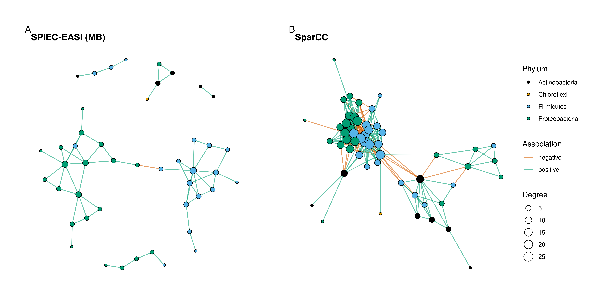

library(here)
library(GraphExperiment)
library(mia)
library(scater)
library(SpiecEasi)
library(bluster)
library(tidyverse)
library(ggraph)
library(patchwork)
set.seed(123) # for reproducibility3 Use case 3: microbial co-occurrence networks
Here, we will use GraphExperiment to store microbial association networks inferred from 16S rRNA amplicon sequencing data, with taxon-taxon networks in rowGraphs and a sample-sample network in colGraphs. We will use the peerj13075 data set from the mia package, a core package of the miaverse ecosystem (Borman et al. 2025), which contains skin microbiota profiles of 58 genetically unrelated Indian individuals from three different cities and with different diets (vegetarian and mixed) (Potbhare et al. 2022).
Microbiome abundance data are compositional, i.e., sequencing only provides information on the relative abundances of taxa. Thus, standard correlation measures (e.g., Pearson’s or Spearman’s correlations) can lead to spurious associations (Friedman and Alm 2012; Gloor et al. 2017). To account for compositionality, we will use two widely used methods implemented in the SpiecEasi package: SPIEC-EASI (Kurtz et al. 2015), which infers a sparse graphical model (i.e., conditional dependencies between taxa) from centered log-ratio (CLR)-transformed data, and SparCC (Friedman and Alm 2012), which estimates correlations between the underlying (log-transformed) absolute abundances.
3.1 Data description and processing
The data are stored in a TreeSummarizedExperiment object, the core data structure of the miaverse ecosystem (Huang et al. 2020). Taxa were already agglomerated at the genus level.
# Load data
data("peerj13075", package = "mia")
tse <- peerj13075
tseclass: TreeSummarizedExperiment
dim: 674 58
metadata(0):
assays(1): counts
rownames(674): OTU1 OTU2 ... OTU2567 OTU2569
rowData names(6): kingdom phylum ... family genus
colnames(58): ID1 ID2 ... ID57 ID58
colData names(5): Sample Geographical_location Gender Age Diet
reducedDimNames(0):
mainExpName: NULL
altExpNames(0):
rowLinks: NULL
rowTree: NULL
colLinks: NULL
colTree: NULL# Sample metadata
table(tse$Geographical_location, tse$Diet)
Mixed Veg
Ahmednagar 4 7
Nashik 10 1
Pune 14 22Since rare taxa provide little information for network inference, we will only keep genera with at least one read in at least 20% of the samples. Then, we will add a CLR-transformed assay, which we will use later.
# Keep only prevalent genera
tse <- subsetByPrevalent(tse, detection = 1, prevalence = 0.2)
dim(tse)[1] 72 58# Add CLR-transformed assay
tse <- transformAssay(tse, method = "clr", pseudocount = 1)Like GraphExperiment, TreeSummarizedExperiment extends the SingleCellExperiment class. Hence, we can easily coerce a TreeSummarizedExperiment object to a GraphExperiment object. Tree-specific slots (rowTree, colTree, etc.) are not kept, but they could be stored in the metadata slot if needed (see use cases 6 and 7 for examples on how to handle phylogenies).
# Coerce `TreeSummarizedExperiment` to `GraphExperiment`
ge <- as(tse, "GraphExperiment")
geclass: GraphExperiment
dim: 72 58
metadata(0):
assays(2): counts clr
rownames(72): OTU2 OTU53 ... OTU2544 OTU2550
rowData names(6): kingdom phylum ... family genus
colnames(58): ID1 ID2 ... ID57 ID58
colData names(5): Sample Geographical_location Gender Age Diet
reducedDimNames(0):
mainExpName: NULL
altExpNames(0):
rowGraphs(0):
colGraphs(0):3.2 Inferring taxon-taxon association networks
Now, we will infer an association network with SPIEC-EASI using the Meinshausen-Bühlmann neighborhood selection method, with the sparsity parameter selected with the StARS approach (Liu et al. 2010). Note that spiec.easi() expects samples in rows and taxa in columns, and it performs CLR transformation internally.
# Infer network with SPIEC-EASI
counts <- t(assay(ge, "counts"))
se_mb <- spiec.easi(
counts, method = "mb", lambda.min.ratio = 1e-3, nlambda = 30,
pulsar.params = list(rep.num = 50, seed = 123)
)
# Get edge weights (symmetrized regression coefficients)
mb_weights <- as.matrix(symBeta(getOptBeta(se_mb), mode = "maxabs"))
dimnames(mb_weights) <- list(colnames(counts), colnames(counts))
# Create igraph object
g_spieceasi <- graph_from_adjacency_matrix(
mb_weights, mode = "undirected", weighted = TRUE, diag = FALSE
)
E(g_spieceasi)$sign <- ifelse(E(g_spieceasi)$weight > 0, "positive", "negative")
g_spieceasiIGRAPH 901fd04 UNW- 72 61 --
+ attr: name (v/c), weight (e/n), sign (e/c)
+ edges from 901fd04 (vertex names):
[1] OTU53 --OTU978 OTU119 --OTU520 OTU119 --OTU929 OTU119 --OTU2111
[5] OTU119 --OTU2377 OTU194 --OTU773 OTU194 --OTU1768 OTU198 --OTU2243
[9] OTU367 --OTU1075 OTU520 --OTU2076 OTU520 --OTU2111 OTU562 --OTU1075
[13] OTU562 --OTU1585 OTU804 --OTU929 OTU804 --OTU2054 OTU804 --OTU2076
[17] OTU807 --OTU1212 OTU860 --OTU1075 OTU860 --OTU1622 OTU860 --OTU1810
[21] OTU860 --OTU2059 OTU860 --OTU2529 OTU929 --OTU2076 OTU978 --OTU987
[25] OTU978 --OTU1709 OTU987 --OTU1709 OTU987 --OTU1789 OTU987 --OTU2076
[29] OTU987 --OTU2111 OTU987 --OTU2371 OTU1034--OTU1768 OTU1075--OTU1336
+ ... omitted several edgesNext, we will estimate SparCC correlations, and use 100 bootstrap replicates to obtain P-values. We will keep only edges with P < 0.05 and absolute correlations \(\geq\) 0.3.
# Estimate SparCC correlations with bootstrap P-values
sparcc_boot <- sparccboot(counts, R = 100)
sparcc_p <- pval.sparccboot(sparcc_boot)
# Create matrices of correlations and P-values
n <- ncol(counts)
sparcc_cor <- sparcc_pval <- matrix(
0, n, n, dimnames = list(colnames(counts), colnames(counts))
)
sparcc_cor[upper.tri(sparcc_cor)] <- sparcc_p$cors
sparcc_pval[upper.tri(sparcc_pval)] <- sparcc_p$pvals
# Keep only significant correlations
sparcc_cor[sparcc_pval >= 0.05 | abs(sparcc_cor) < 0.3] <- 0
# Create igraph object
g_sparcc <- graph_from_adjacency_matrix(
sparcc_cor, mode = "upper", weighted = TRUE, diag = FALSE
)
E(g_sparcc)$sign <- ifelse(E(g_sparcc)$weight > 0, "positive", "negative")
g_sparccIGRAPH 27faacf UNW- 72 277 --
+ attr: name (v/c), weight (e/n), sign (e/c)
+ edges from 27faacf (vertex names):
[1] OTU53 --OTU119 OTU53 --OTU520 OTU53 --OTU804 OTU53 --OTU929
[5] OTU53 --OTU978 OTU53 --OTU987 OTU53 --OTU1075 OTU53 --OTU1235
[9] OTU53 --OTU1585 OTU53 --OTU1680 OTU53 --OTU1709 OTU53 --OTU1789
[13] OTU53 --OTU2076 OTU53 --OTU2377 OTU53 --OTU2529 OTU119--OTU520
[17] OTU119--OTU804 OTU119--OTU860 OTU119--OTU929 OTU119--OTU978
[21] OTU119--OTU987 OTU119--OTU1260 OTU119--OTU1585 OTU119--OTU1680
[25] OTU119--OTU1709 OTU119--OTU2076 OTU119--OTU2111 OTU119--OTU2117
[29] OTU119--OTU2127 OTU119--OTU2243 OTU119--OTU2371 OTU119--OTU2377
+ ... omitted several edgesBoth networks were inferred from the same features, so they can be stored together in the rowGraphs slot. We will also add node degrees as node attributes.
# Add node degree as node attributes
V(g_spieceasi)$degree <- degree(g_spieceasi)
V(g_sparcc)$degree <- degree(g_sparcc)
# Add graphs to `rowGraphs`
rowGraphs(ge) <- list(spieceasi = g_spieceasi, sparcc = g_sparcc)
geclass: GraphExperiment
dim: 72 58
metadata(0):
assays(2): counts clr
rownames(72): OTU2 OTU53 ... OTU2544 OTU2550
rowData names(8): kingdom phylum ... spieceasi__degree sparcc__degree
colnames(58): ID1 ID2 ... ID57 ID58
colData names(5): Sample Geographical_location Gender Age Diet
reducedDimNames(0):
mainExpName: NULL
altExpNames(0):
rowGraphs(2): spieceasi sparcc
colGraphs(0):3.3 Inferring a sample-sample network
Microbiome data are often explored at the sample level, e.g., to identify groups of samples with similar community compositions. Here, we will create a k-nearest neighbor (kNN) graph of samples based on Aitchison distances (i.e., Euclidean distances of CLR-transformed data) with bluster (Lun 2025). For that, we will first perform a principal component analysis on the CLR-transformed data with scater (McCarthy et al. 2017), and then build the kNN graph from the top 10 principal components. Then, we will identify communities in this graph with the Louvain algorithm, and store community assignments as node attributes.
# Perform PCA on CLR-transformed data
ge <- runPCA(ge, assay.type = "clr", ncomponents = 10)
# Build kNN graph of samples
g_samples <- makeKNNGraph(reducedDim(ge, "PCA"), k = 5)
V(g_samples)$name <- colnames(ge)
# Identify communities of samples
V(g_samples)$community <- as.character(membership(cluster_louvain(g_samples)))
# Add graph to `colGraphs`
colGraph(ge, "aitchison_knn") <- g_samples
geclass: GraphExperiment
dim: 72 58
metadata(0):
assays(2): counts clr
rownames(72): OTU2 OTU53 ... OTU2544 OTU2550
rowData names(8): kingdom phylum ... spieceasi__degree sparcc__degree
colnames(58): ID1 ID2 ... ID57 ID58
colData names(6): Sample Geographical_location ... Diet
aitchison_knn__community
reducedDimNames(1): PCA
mainExpName: NULL
altExpNames(0):
rowGraphs(2): spieceasi sparcc
colGraphs(1): aitchison_knnNote that the GraphExperiment object now contains assays, taxon and sample metadata, principal components, and graphs of both taxa and samples. As node attributes are added to rowData and colData, we can explore how communities of samples are associated with sample metadata.
# Community assignments vs sample metadata
table(ge$aitchison_knn__community, ge$Geographical_location)
Ahmednagar Nashik Pune
1 2 0 9
2 5 0 1
3 2 1 9
4 0 1 5
5 0 1 7
6 0 7 0
7 2 1 5table(ge$aitchison_knn__community, ge$Diet)
Mixed Veg
1 5 6
2 2 4
3 3 9
4 2 4
5 4 4
6 7 0
7 5 33.4 Exploring and comparing taxon-taxon networks
Since both networks are stored in the same object, we can easily compare them. For instance, let’s check how many edges are shared between the networks, and whether shared edges have the same sign.
# Get edges shared between networks
shared <- intersection(
rowGraph(ge, "spieceasi"), rowGraph(ge, "sparcc"), keep.all.vertices = FALSE
)
c(
SPIEC_EASI = ecount(rowGraph(ge, "spieceasi")),
SparCC = ecount(rowGraph(ge, "sparcc")),
Shared = ecount(shared)
)SPIEC_EASI SparCC Shared
61 277 53 # Same sign in both networks?
table(E(shared)$sign_1 == E(shared)$sign_2)
TRUE
53 Node degrees in each graph are available in rowData, along with taxonomic information. Thus, we can identify the most connected taxa (hubs) in each network, and check whether they agree.
rowData(ge) |>
as.data.frame() |>
select(phylum, genus, spieceasi__degree, sparcc__degree) |>
arrange(-spieceasi__degree) |>
head(10) phylum genus spieceasi__degree sparcc__degree
OTU2529 Firmicutes Virgibacillus 9 24
OTU2111 Proteobacteria Serratia 8 22
OTU987 Proteobacteria Escherichia/Shigella 6 16
OTU2076 Proteobacteria Salmonella 6 20
OTU860 Firmicutes Desulfosporomusa 5 15
OTU1075 Firmicutes Geobacillus 5 23
OTU119 Proteobacteria Aeromonas 4 19
OTU1622 Firmicutes Ornithinibacillus 4 11
OTU1810 Firmicutes Planomicrobium 4 17
OTU520 Firmicutes Brevibacillus 3 24# Are degrees correlated?
cor.test(
rowData(ge)$spieceasi__degree, rowData(ge)$sparcc__degree,
method = "spearman", exact = FALSE
)
Spearman's rank correlation rho
data: rowData(ge)$spieceasi__degree and rowData(ge)$sparcc__degree
S = 13463, p-value = 4.107e-16
alternative hypothesis: true rho is not equal to 0
sample estimates:
rho
0.7835346 Finally, let’s visualize both networks with nodes colored by phylum. Since rowGraph() adds rowData variables as node attributes, taxonomic information is readily available for plotting.
# Define colors for phyla (only those of connected nodes)
connected <- rowData(ge)$spieceasi__degree > 0 | rowData(ge)$sparcc__degree > 0
phyla <- sort(unique(rowData(ge)$phylum[connected]))
phylum_colors <- setNames(palette.colors(length(phyla), "Okabe-Ito"), phyla)
max_degree <- max(rowData(ge)$spieceasi__degree, rowData(ge)$sparcc__degree)
# Plotting function
plot_network <- function(g, title) {
g <- delete_vertices(g, which(degree(g) == 0))
ggraph(g, layout = "fr", weights = NA) +
geom_edge_link(aes(color = sign), alpha = 0.6) +
geom_node_point(aes(fill = phylum, size = degree), shape = 21) +
scale_edge_color_manual(
values = c(positive = "#009E73", negative = "#D55E00")
) +
scale_fill_manual(values = phylum_colors, limits = phyla) +
scale_size_continuous(range = c(1.5, 6), limits = c(1, max_degree)) +
theme_graph(base_family = "sans") +
labs(title = title, fill = "Phylum", size = "Degree", edge_color = "Association")
}
# Plot networks
wrap_plots(
plot_network(rowGraph(ge, "spieceasi"), "SPIEC-EASI (MB)"),
plot_network(rowGraph(ge, "sparcc"), "SparCC"),
nrow = 1
) +
plot_layout(guides = "collect") +
plot_annotation(tag_levels = "A") &
theme(plot.title = element_text(size = 13))
Other compositionally-aware methods (e.g., SPRING, CCLasso, or proportionality-based measures), as well as tools for network comparison, are available in the NetCoMi package (Peschel et al. 2020). Regardless of the method used, the resulting networks can be stored in the same GraphExperiment object, making it easy to compare and integrate them.
Session info
This document was created under the following conditions:
─ Session info ───────────────────────────────────────────────────────────────
setting value
version R version 4.5.2 (2025-10-31)
os Ubuntu 22.04.5 LTS
system x86_64, linux-gnu
ui X11
language (EN)
collate en_US.UTF-8
ctype en_US.UTF-8
tz Europe/Brussels
date 2026-10-24
pandoc 3.6.3 @ /opt/quarto/bin/tools/ (via rmarkdown)
quarto 1.8.25 @ /usr/local/bin/quarto
─ Packages ───────────────────────────────────────────────────────────────────
package * version date (UTC) lib source
abind 1.4-8 2024-09-12 [1] CRAN (R 4.5.2)
ape 5.8-1 2024-12-16 [1] CRAN (R 4.5.2)
beachmat 2.26.0 2025-10-29 [1] Bioconductor 3.22 (R 4.5.2)
beeswarm 0.4.0 2021-06-01 [1] CRAN (R 4.5.2)
Biobase * 2.70.0 2025-10-29 [1] Bioconductor 3.22 (R 4.5.2)
BiocBaseUtils 1.12.0 2025-10-29 [1] Bioconductor 3.22 (R 4.5.2)
BiocGenerics * 0.56.0 2025-10-29 [1] Bioconductor 3.22 (R 4.5.2)
BiocNeighbors 2.4.0 2025-10-29 [1] Bioconductor 3.22 (R 4.5.2)
BiocParallel 1.44.0 2025-10-29 [1] Bioconductor 3.22 (R 4.5.2)
BiocSingular 1.26.1 2025-11-17 [1] Bioconductor 3.22 (R 4.5.2)
Biostrings * 2.78.0 2025-10-29 [1] Bioconductor 3.22 (R 4.5.2)
bluster * 1.20.0 2025-10-29 [1] Bioconductor 3.22 (R 4.5.2)
boot 1.3-32 2025-08-29 [4] CRAN (R 4.5.1)
cachem 1.1.0 2024-05-16 [1] CRAN (R 4.5.2)
cellranger 1.1.0 2016-07-27 [1] CRAN (R 4.5.2)
cli 3.6.5 2025-04-23 [1] CRAN (R 4.5.2)
cluster 2.1.8.1 2025-03-12 [4] CRAN (R 4.4.3)
coda 0.19-4.1 2024-01-31 [1] CRAN (R 4.5.2)
codetools 0.2-19 2023-02-01 [4] CRAN (R 4.2.2)
crayon 1.5.3 2024-06-20 [1] CRAN (R 4.5.2)
DBI 1.2.3 2024-06-02 [1] CRAN (R 4.5.2)
DECIPHER 3.6.0 2025-10-29 [1] Bioconductor 3.22 (R 4.5.2)
decontam 1.30.0 2025-10-29 [1] Bioconductor 3.22 (R 4.5.2)
DelayedArray 0.36.0 2025-10-29 [1] Bioconductor 3.22 (R 4.5.2)
DelayedMatrixStats 1.32.0 2025-10-29 [1] Bioconductor 3.22 (R 4.5.2)
dichromat 2.0-1 2026-07-22 [1] CRAN (R 4.5.2)
digest 0.6.39 2025-11-19 [1] CRAN (R 4.5.2)
DirichletMultinomial 1.52.0 2025-10-29 [1] Bioconductor 3.22 (R 4.5.2)
dplyr * 1.1.4 2023-11-17 [1] CRAN (R 4.5.2)
emmeans 2.0.3 2026-04-09 [1] CRAN (R 4.5.2)
estimability 1.5.1 2024-05-12 [1] CRAN (R 4.5.2)
evaluate 1.0.5 2025-08-27 [1] CRAN (R 4.5.2)
farver 2.1.2 2024-05-13 [1] CRAN (R 4.5.2)
fastmap 1.2.0 2024-05-15 [1] CRAN (R 4.5.2)
fillpattern 1.0.4 2026-09-25 [1] CRAN (R 4.5.2)
forcats * 1.0.1 2025-09-25 [1] CRAN (R 4.5.2)
foreach 1.5.2 2022-02-02 [1] CRAN (R 4.5.2)
fs 1.6.6 2025-04-12 [1] CRAN (R 4.5.2)
generics * 0.1.4 2025-05-09 [1] CRAN (R 4.5.2)
GenomicRanges * 1.62.1 2025-12-08 [1] Bioconductor 3.22 (R 4.5.2)
ggbeeswarm 0.7.3 2025-11-29 [1] CRAN (R 4.5.2)
ggforce 0.5.0 2025-06-18 [1] CRAN (R 4.5.2)
ggnewscale 0.5.2 2025-06-20 [1] CRAN (R 4.5.2)
ggplot2 * 4.0.1 2025-11-14 [1] CRAN (R 4.5.2)
ggraph * 2.2.2 2025-08-24 [1] CRAN (R 4.5.2)
ggrepel 0.9.6 2024-09-07 [1] CRAN (R 4.5.2)
ggtext 0.1.2 2022-09-16 [1] CRAN (R 4.5.2)
glmnet 4.1-10 2025-07-17 [1] CRAN (R 4.5.2)
glue 1.8.0 2024-09-30 [1] CRAN (R 4.5.2)
GraphExperiment * 1.1.2 2026-09-08 [1] Bioconductor
graphlayouts 1.2.3 2026-02-21 [1] CRAN (R 4.5.2)
gridExtra 2.3 2017-09-09 [1] CRAN (R 4.5.2)
gridtext 0.1.5 2022-09-16 [1] CRAN (R 4.5.2)
gtable 0.3.6 2024-10-25 [1] CRAN (R 4.5.2)
here * 1.0.2 2025-09-15 [1] CRAN (R 4.5.2)
hms 1.1.4 2025-10-17 [1] CRAN (R 4.5.2)
htmltools 0.5.9 2025-12-04 [1] CRAN (R 4.5.2)
htmlwidgets 1.6.4 2023-12-06 [1] CRAN (R 4.5.2)
huge 2.0.1 2026-08-04 [1] CRAN (R 4.5.2)
igraph * 2.2.1 2025-10-27 [1] CRAN (R 4.5.2)
IRanges * 2.44.0 2025-10-29 [1] Bioconductor 3.22 (R 4.5.2)
irlba 2.3.5.1 2022-10-03 [1] CRAN (R 4.5.2)
iterators 1.0.14 2022-02-05 [1] CRAN (R 4.5.2)
jsonlite 2.0.0 2025-03-27 [1] CRAN (R 4.5.2)
knitr 1.51 2025-12-20 [1] CRAN (R 4.5.2)
labeling 0.4.3 2023-08-29 [1] CRAN (R 4.5.2)
lattice 0.22-5 2023-10-24 [4] CRAN (R 4.3.1)
lazyeval 0.2.2 2019-03-15 [1] CRAN (R 4.5.2)
lifecycle 1.0.5 2026-01-08 [1] CRAN (R 4.5.2)
lubridate * 1.9.4 2024-12-08 [1] CRAN (R 4.5.2)
magrittr 2.0.4 2025-09-12 [1] CRAN (R 4.5.2)
MASS 7.3-65 2025-02-28 [4] CRAN (R 4.4.3)
Matrix 1.7-4 2025-08-28 [4] CRAN (R 4.5.1)
MatrixGenerics * 1.22.0 2025-10-29 [1] Bioconductor 3.22 (R 4.5.2)
matrixStats * 1.5.0 2025-01-07 [1] CRAN (R 4.5.2)
memoise 2.0.1 2021-11-26 [1] CRAN (R 4.5.2)
mgcv 1.9-4 2025-11-07 [4] CRAN (R 4.5.2)
mia * 1.18.0 2025-10-29 [1] Bioconductor 3.22 (R 4.5.2)
MultiAssayExperiment * 1.36.2 2026-03-29 [1] Bioconductor 3.22 (R 4.5.2)
mvtnorm 1.3-7 2026-04-15 [1] CRAN (R 4.5.2)
nlme 3.1-168 2025-03-31 [4] CRAN (R 4.4.3)
otel 0.2.0 2025-08-29 [1] CRAN (R 4.5.2)
parallelly 1.46.1 2026-01-08 [1] CRAN (R 4.5.2)
patchwork * 1.3.2 2025-08-25 [1] CRAN (R 4.5.2)
permute 0.9-10 2026-02-06 [1] CRAN (R 4.5.2)
pillar 1.11.1 2025-09-17 [1] CRAN (R 4.5.2)
pkgconfig 2.0.3 2019-09-22 [1] CRAN (R 4.5.2)
plyr 1.8.9 2023-10-02 [1] CRAN (R 4.5.2)
polyclip 1.10-7 2024-07-23 [1] CRAN (R 4.5.2)
pulsar 0.3.11 2023-09-24 [1] CRAN (R 4.5.2)
purrr * 1.2.1 2026-01-09 [1] CRAN (R 4.5.2)
R6 2.6.1 2025-02-15 [1] CRAN (R 4.5.2)
ragg 1.5.0 2025-09-02 [1] CRAN (R 4.5.2)
rappdirs 0.3.4 2026-01-17 [1] CRAN (R 4.5.2)
rbiom 2.2.1 2025-06-27 [1] CRAN (R 4.5.2)
RColorBrewer 1.1-3 2022-04-03 [1] CRAN (R 4.5.2)
Rcpp 1.1.1 2026-01-10 [1] CRAN (R 4.5.2)
readr * 2.1.6 2025-11-14 [1] CRAN (R 4.5.2)
readxl 1.4.5 2025-03-07 [1] CRAN (R 4.5.2)
reshape2 1.4.5 2025-11-12 [1] CRAN (R 4.5.2)
rlang 1.1.7 2026-01-09 [1] CRAN (R 4.5.2)
rmarkdown 2.30 2025-09-28 [1] CRAN (R 4.5.2)
rprojroot 2.1.1 2025-08-26 [1] CRAN (R 4.5.2)
rsvd 1.0.5 2021-04-16 [1] CRAN (R 4.5.2)
S4Arrays 1.10.1 2025-12-01 [1] Bioconductor 3.22 (R 4.5.2)
S4Vectors * 0.48.0 2025-10-29 [1] Bioconductor 3.22 (R 4.5.2)
S7 0.2.1 2025-11-14 [1] CRAN (R 4.5.2)
ScaledMatrix 1.18.0 2025-10-29 [1] Bioconductor 3.22 (R 4.5.2)
scales 1.4.0 2025-04-24 [1] CRAN (R 4.5.2)
scater * 1.38.1 2026-03-20 [1] Bioconductor 3.22 (R 4.5.2)
scuttle * 1.20.0 2025-10-30 [1] Bioconductor 3.22 (R 4.5.2)
Seqinfo * 1.0.0 2025-10-29 [1] Bioconductor 3.22 (R 4.5.2)
sessioninfo 1.2.3 2025-02-05 [1] CRAN (R 4.5.2)
shape 1.4.6.1 2024-02-23 [1] CRAN (R 4.5.2)
SingleCellExperiment * 1.32.0 2025-10-29 [1] Bioconductor 3.22 (R 4.5.2)
slam 0.1-56 2026-07-13 [1] CRAN (R 4.5.2)
SparseArray 1.10.8 2025-12-18 [1] Bioconductor 3.22 (R 4.5.2)
sparseMatrixStats 1.22.0 2025-10-29 [1] Bioconductor 3.22 (R 4.5.2)
SpiecEasi * 1.99.0 2026-10-21 [1] Github (zdk123/SpiecEasi@03b96da)
stringi 1.8.7 2025-03-27 [1] CRAN (R 4.5.2)
stringr * 1.6.0 2025-11-04 [1] CRAN (R 4.5.2)
SummarizedExperiment * 1.40.0 2025-10-29 [1] Bioconductor 3.22 (R 4.5.2)
survival 3.8-6 2026-01-16 [4] CRAN (R 4.5.2)
systemfonts 1.3.1 2025-10-01 [1] CRAN (R 4.5.2)
textshaping 1.0.4 2025-10-10 [1] CRAN (R 4.5.2)
tibble * 3.3.1 2026-01-11 [1] CRAN (R 4.5.2)
tidygraph 1.3.1 2024-01-30 [1] CRAN (R 4.5.2)
tidyr * 1.3.2 2025-12-19 [1] CRAN (R 4.5.2)
tidyselect 1.2.1 2024-03-11 [1] CRAN (R 4.5.2)
tidytree 0.4.7 2026-01-08 [1] CRAN (R 4.5.2)
tidyverse * 2.0.0 2023-02-22 [1] CRAN (R 4.5.2)
timechange 0.3.0 2024-01-18 [1] CRAN (R 4.5.2)
treeio 1.34.0 2025-10-30 [1] Bioconductor 3.22 (R 4.5.2)
TreeSummarizedExperiment * 2.18.0 2025-10-30 [1] Bioconductor 3.22 (R 4.5.2)
tweenr 2.0.3 2024-02-26 [1] CRAN (R 4.5.2)
tzdb 0.5.0 2025-03-15 [1] CRAN (R 4.5.2)
vctrs 0.7.1 2026-01-23 [1] CRAN (R 4.5.2)
vegan 2.7-3 2026-03-04 [1] CRAN (R 4.5.2)
VGAM 1.1-14 2025-12-04 [1] CRAN (R 4.5.2)
vipor 0.4.7 2023-12-18 [1] CRAN (R 4.5.2)
viridis 0.6.5 2024-01-29 [1] CRAN (R 4.5.2)
viridisLite 0.4.2 2023-05-02 [1] CRAN (R 4.5.2)
withr 3.0.2 2024-10-28 [1] CRAN (R 4.5.2)
xfun 0.56 2026-01-18 [1] CRAN (R 4.5.2)
xml2 1.5.2 2026-01-17 [1] CRAN (R 4.5.2)
xtable 1.8-4 2019-04-21 [1] CRAN (R 4.5.2)
XVector * 0.50.0 2025-10-29 [1] Bioconductor 3.22 (R 4.5.2)
yaml 2.3.12 2025-12-10 [1] CRAN (R 4.5.2)
yulab.utils 0.2.3 2025-12-15 [1] CRAN (R 4.5.2)
[1] /home/faalm/R/x86_64-pc-linux-gnu-library/4.5
[2] /usr/local/lib/R/site-library
[3] /usr/lib/R/site-library
[4] /usr/lib/R/library
* ── Packages attached to the search path.
──────────────────────────────────────────────────────────────────────────────